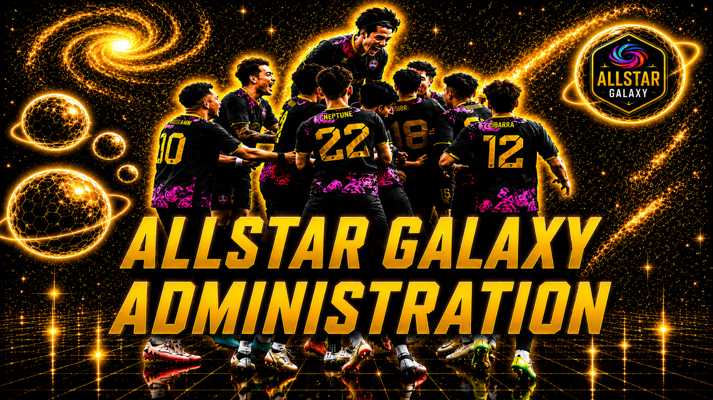

Content
Configure page text, hero images, status messages, navigation, and footer content.
Open Content →
Manage page configurations, hero carousels, team information, media, updates, website settings, and diagnostics from one organized workspace.
Configure page text, hero images, status messages, navigation, and footer content.
Open Content →Prepare player records, roster status, team statistics, and featured-player content.
Open Team →Organize games, seasons, playlists, awards, Best Of collections, and archives.
Open Media →Manage schedules, results, standings, news, and livestream information.
Open Updates →Control graphics, backgrounds, social links, site settings, and shared components.
Open Website →Review missing files, broken links, configuration errors, and visual QA checks.
Open Diagnostics →Open the current live public site in the same browser window.
View Site →Read the developer guide and the V2.5 installation and maintenance notes.
Open Guide →The Page Configuration Editor below controls one page JSON file at a time. Download the edited file and replace its matching file in data/pages/.
The team module is isolated in data/pages/team.json, js/pages/team.js, and css/pages/team.css. Future player forms can be added here without changing public shared components.
Games, seasons, playlists, awards, and archive records should remain in dedicated data files so media changes do not affect Team, Updates, or other pages.
Schedule, results, standings, news, and livestream controls will use their own isolated data modules.
Shared changes belong in data/site-config.json, css/components.css, or js/site-frame.js. Those files intentionally affect every public page.
Use the test below to verify that GitHub Pages serves the root 404.html file for an invalid address.
Hero images can be added, removed, and reordered. The public carousel automatically creates one control dot for every configured image, with no fixed image limit.